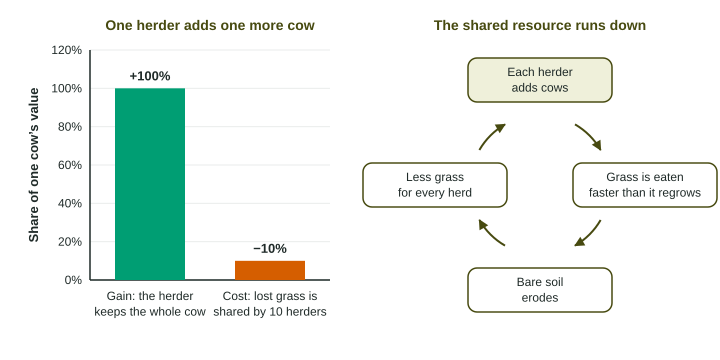

Some resources belong to everyone and to no one: the fish in the open ocean, the water in an aquifer under many farms, the grass on a shared pasture, the air. This page explains why these shared resources are so often used up faster than they can recover, and which kinds of rules prevent it.
A pasture shared by ten herders
Picture a pasture that can feed 100 cows for as long as you like: the grass grows back as fast as it is eaten. Ten herders share it, with 10 cows each. Now one herder adds an eleventh cow. That herder keeps the whole value of the new cow: its milk, its calf, its meat. The cost is a little less grass, and that cost is shared by all ten herders. The herder who added the cow pays only one tenth of it.

Every herder can do this math, so every herder adds cows. Soon the pasture holds far more cows than its carrying capacity. The grass is eaten faster than it regrows, roots die, bare soil erodes, and the pasture feeds fewer cows than it did at the start. Each herder acted sensibly for themselves, and together they ruined the pasture. The ecologist Garrett Hardin called this pattern the tragedy of the commons in 1968.
What makes a resource a commons
A common resource has two features. It is shared, and it is hard to keep anyone from using it. And it is used up as it is used: a fish one boat catches is a fish another boat cannot. Examples you will meet in this unit and later ones:
| Shared resource | What each user gains | The cost everyone shares |
|---|---|---|
| Open ocean fish | every fish a boat catches | fewer fish to breed next year |
| An aquifer under many farms | every liter a farm pumps | a lower water table and costlier pumping for all |
| Public grazing land | every extra animal a rancher grazes | bare, eroding soil |
| The atmosphere | dumping carbon dioxide and smoke for free | climate change and dirty air for everyone |
The cause is the same each time: the gain goes to one user, the cost is split among all users. Knowing about the harm is often not enough to stop it, because a user who holds back simply leaves more for the others.
Working with the numbers
Two calculations show the problem. The first is the share of the cost a user pays. The second is how far use has gone past what the resource can renew.
Twenty herders share a pasture. What percent of the cost of one more cow does the herder who adds it pay?
Setup: . The herder keeps 100% of the gain and pays 5% of the cost.
A pasture with a carrying capacity of 120 cows holds 120. Each of 12 herders adds 3 cows, so the herd becomes cows. By what percent is it above carrying capacity?
Setup:
When a resource is a fishery, look at the catch for each boat, not just the total. Total catch can hold steady for years while more and more boats share it; a falling catch per boat is an early sign that the stock is shrinking.
How shared resources are protected
Every fix works by changing what each user gains from taking more. Say the scale and how it works:
- Limits set by law. A government sets a total catch, a grazing permit or a pumping cap, and enforces it. Example: a state law that caps how much each well may pump per year and requires a meter, so total pumping stays at or below recharge.
- Assigned shares or rights. Each user gets a fixed share of a total limit, such as a share of the yearly catch. Racing to take more no longer pays, because a user cannot go past their share.
- Fees. Charging for each unit taken (a grazing fee per animal, a fee per ton of pollution) makes the user pay more of the cost.
- Community rules. The economist Elinor Ostrom found that many villages have managed shared forests, pastures and irrigation canals for centuries. They succeed when users agree on rules, watch each other, and penalize anyone who takes too much.
Asking people to take less, on its own, rarely works, because it leaves the rewards the same. On the exam, a policy is a law or a rule ("a law limiting the number of fishing permits"), not a piece of technology.
Why it matters for this unit
The tragedy of the commons runs through Unit 5. Forests cut faster than they regrow, aquifers pumped faster than rain refills them, and fish caught faster than they breed are all versions of it. Later topics in this unit give the idea a target: take no more than the resource can renew.